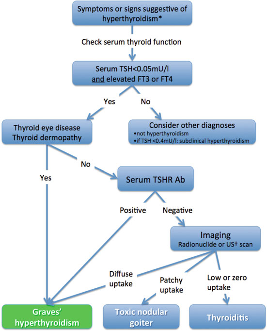

<!DOCTYPE html>
<html lang="en">
<head>
<meta charset="UTF-8">
<meta name="viewport" content="width=device-width, initial-scale=1.0">
<title>Surgical Insight Hub — Graves´ Disease Monograph</title>
<link href="https://fonts.googleapis.com/css2?family=Playfair+Display:wght@400;600;700&family=Source+Serif+4:ital,opsz,wght@0,8..60,300;0,8..60,400;0,8..60,600;1,8..60,300;1,8..60,400&family=JetBrains+Mono:wght@400;500&display=swap" rel="stylesheet">
<link rel="stylesheet" href="../../css/theme.css?v=4.0.0">
<link rel="stylesheet" href="../../css/shared.css">
<script>
  const savedTheme = localStorage.getItem('sih-theme') || 'light';
  if (savedTheme === 'dark') document.documentElement.setAttribute('data-theme', 'dark');
</script>
<style>
:root {
  --primary:   #4C1D95; 
  --primary-dk:#2E1065;
  --primary-lt:#F5F3FF;
  --accent:    #7C3AED;
  --accent2:   #E11D48;
  --gold:      #D97706;
  --gold-lt:   #FEF3C7;
  --red:       #E11D48;
  --red-lt:    #FFF1F2;
  --bg:        #FAFAFA;
  --bg2:       #F4F4F5;
  --border:    #E5E7EB;
  --text:      #0F172A;
  --muted:     #64748B;
  --white:     #FFFFFF;
  --sidebar-w: 320px;
}
[data-theme="dark"] {
  --bg: #0A0702;
  --bg2: #140E05;
  --text: #F3F4F6;
  --muted: #A3A3A3;
  --border: rgba(255,255,255,0.08);
  --primary-lt: #2E1065;
  --white: #140E05;
}
*,*::before,*::after{box-sizing:border-box;margin:0;padding:0;}
html{scroll-behavior:smooth;}
body{font-family:'Source Serif 4',Georgia,serif;background:var(--bg);color:var(--text);font-size:16px;line-height:1.75;}

#sidebar {
  position: fixed; top: 0; left: 0; width: var(--sidebar-w); height: 100vh;
  background: var(--primary-dk); color: #F5F3FF;
  display: flex; flex-direction: column;
  z-index: 1000; overflow: hidden;
  transform: translateX(-100%);
  transition: transform 0.3s cubic-bezier(0.4, 0, 0.2, 1);
  box-shadow: 4px 0 24px rgba(0,0,0,0.4);
}
body.sidebar-open #sidebar { transform: translateX(0); }

#sidebar-overlay {
  position: fixed; top: 0; left: 0; width: 100vw; height: 100vh;
  background: rgba(46, 16, 101, 0.7); backdrop-filter: blur(3px);
  z-index: 950; opacity: 0; pointer-events: none; transition: opacity 0.3s ease;
}
body.sidebar-open #sidebar-overlay { opacity: 1; pointer-events: auto; }

#sidebar-toggle {
  position: fixed; top: 72px; left: 24px; z-index: 900;
  background: var(--primary); color: white;
  border: none; border-radius: 30px;
  padding: 10px 18px; font-family: 'JetBrains Mono', monospace; font-size: 13px; font-weight: 600;
  letter-spacing: 0.05em; cursor: pointer; box-shadow: 0 4px 12px rgba(0,0,0,0.25);
  display: flex; align-items: center; gap: 8px; transition: all 0.2s;
}
#sidebar-toggle:hover { background: var(--accent2); transform: translateY(-2px); }

#sidebar-header{padding:20px 20px 14px;border-bottom:1px solid rgba(255,255,255,0.08);flex-shrink:0;}
#sidebar-header .logo{font-family:'Playfair Display',serif;font-size:13px;font-weight:700;color:var(--accent2);letter-spacing:0.08em;text-transform:uppercase;margin-bottom:4px;}
#sidebar-header .sub{font-size:10.5px;color:rgba(245,243,255,0.6);letter-spacing:0.04em;}
#sidebar-search{padding:10px 14px;border-bottom:1px solid rgba(255,255,255,0.05);flex-shrink:0;}
#sidebar-search input{width:100%;background:rgba(255,255,255,0.05);border:1px solid rgba(255,255,255,0.1);border-radius:6px;color:#F5F3FF;padding:6px 10px;font-size:12px;font-family:'Source Serif 4',serif;outline:none;transition:border-color 0.2s;}
#sidebar-search input::placeholder{color:rgba(245,243,255,0.4);}
#sidebar-search input:focus{border-color:var(--accent2);}
#sidebar-nav{flex:1;overflow-y:auto;padding:8px 0 20px;}
#sidebar-nav::-webkit-scrollbar{width:4px;}
#sidebar-nav::-webkit-scrollbar-thumb{background:rgba(255,255,255,0.15);border-radius:2px;}
.vol-label{font-size:9.5px;font-weight:600;letter-spacing:0.12em;text-transform:uppercase;color:var(--accent2);padding:14px 18px 4px;}
.nav-item{display:block;padding:8px 18px 8px 22px;font-size:12.5px;color:rgba(245,243,255,0.8);text-decoration:none;border-left:2px solid transparent;transition:all 0.15s;line-height:1.4;}
.nav-item:hover{color:#fff;background:rgba(255,255,255,0.03);border-left-color:rgba(225,29,72,0.5);}
.nav-item.active{color:#fff;background:rgba(255,255,255,0.06);border-left-color:var(--accent2);font-weight:600;}
.nav-item .num{font-family:'JetBrains Mono',monospace;font-size:10px;color:rgba(245,243,255,0.4);margin-right:6px;}

#main{margin-left:0; min-height:100vh;}
#hero{background:linear-gradient(135deg,var(--primary-dk) 0%,#4C1D95 60%,#2E1065 100%);color:white;padding:120px 72px 60px;position:relative;overflow:hidden;}
#hero::before{content:'';position:absolute;top:-60px;right:-60px;width:380px;height:380px;background:radial-gradient(circle,rgba(225,29,72,0.15) 0%,transparent 70%);pointer-events:none;}
#hero::after{content:'';position:absolute;bottom:0;left:0;right:0;height:3px;background:linear-gradient(90deg,var(--accent2),var(--gold),transparent);}
#hero .eyebrow{font-family:'JetBrains Mono',monospace;font-size:11px;letter-spacing:0.16em;color:var(--accent2);text-transform:uppercase;margin-bottom:14px;}
#hero h1{font-family:'Playfair Display',serif;font-size:42px;font-weight:700;line-height:1.15;margin-bottom:10px;color:#fff;}
#hero .subtitle{font-size:18px;color:rgba(255,255,255,0.8);font-style:italic;margin-bottom:28px;}
#hero .badges{display:flex;gap:10px;flex-wrap:wrap;}
#hero .badge{background:rgba(255,255,255,0.1);border:1px solid rgba(255,255,255,0.2);border-radius:20px;padding:4px 14px;font-size:12px;color:rgba(255,255,255,0.95);font-family:'JetBrains Mono',monospace;}

.content-wrap{max-width:900px;margin:0 auto;padding:40px 48px 80px;}

.callout{margin:18px 0;padding:14px 18px;border-radius:0 8px 8px 0;border-left:4px solid;font-size:14px;line-height:1.65;}
.callout .label{font-family:'JetBrains Mono',monospace;font-size:10px;font-weight:600;letter-spacing:0.12em;text-transform:uppercase;display:block;margin-bottom:4px;}
.callout.pearl{background:var(--gold-lt);border-color:var(--gold);color:var(--text);}
.callout.pearl .label{color:var(--gold);}
.callout.warn{background:var(--red-lt);border-color:var(--red);color:var(--text);}
.callout.warn .label{color:var(--red);}

@media(max-width:900px) {
  .content-wrap { padding: 20px 20px 60px; }
  #hero { padding: 80px 20px 40px; }
  #hero h1 { font-size: 30px; }
  #sidebar-toggle { top: 64px; left: 16px; }
}
</style>
<link rel="icon" type="image/png" href="../../assets/images/Surgical_Insight_Hub_Logo.png">
</head>
<body>

<nav class="nav" id="mainNav">
  <div class="nav-left">
    <a href="../../index.html" class="nav-pill">
      <div class="nav-logo-img">
        
      </div>
      <div>
        <div class="nav-brand-text">Surgical Insight Hub</div>
        <div class="nav-brand-sub">The Residency Journal</div>
      </div>
    </a>
  </div>
  <div class="nav-links-pill">
    <a href="../../index.html">Home</a>
    <a href="../../notes.html" class="active">Notes</a>
    <a href="../operative_approach.html">Playbook</a>
    <a href="../../arena.html?v=4.0.0">MCQ Arena</a>
    <a href="../../podcast.html">Podcast</a>
    <a href="../../surgery-talk.html">Surgery Talk</a>
    <a href="../../about.html">About</a>
  </div>
  <div class="nav-right">
    <button class="theme-toggle" id="themeToggle" aria-label="Toggle Theme">
      <svg id="moonIcon" viewBox="0 0 24 24" width="18" height="18"><path d="M21 12.79A9 9 0 1 1 11.21 3 7 7 0 0 0 21 12.79z"></path></svg>
      <svg id="sunIcon" style="display:none;" viewBox="0 0 24 24" width="18" height="18"><circle cx="12" cy="12" r="5"></circle><line x1="12" y1="1" x2="12" y2="3"></line><line x1="12" y1="21" x2="12" y2="23"></line><line x1="4.22" y1="4.22" x2="5.64" y2="5.64"></line><line x1="18.36" y1="18.36" x2="19.78" y2="19.78"></line><line x1="1" y1="12" x2="3" y2="12"></line><line x1="21" y1="12" x2="23" y2="12"></line><line x1="4.22" y1="19.78" x2="5.64" y2="18.36"></line><line x1="18.36" y1="5.64" x2="19.78" y2="4.22"></line></svg>
    </button>
    <a href="https://t.me/sugicalInsightHub" target="_blank" class="nav-tg-btn" title="Join Telegram">
      <svg width="18" height="18" viewBox="0 0 24 24" fill="#f0d080"><path d="M12 0C5.37 0 0 5.37 0 12s5.37 12 12 12 12-5.37 12-12S18.63 0 12 0zm5.89 8.22l-1.97 9.28c-.15.66-.54.82-1.08.51l-3-2.21-1.45 1.39c-.16.16-.3.3-.61.3l.21-3.05 5.56-5.02c.24-.21-.05-.33-.37-.12l-6.87 4.33-2.96-.92c-.64-.2-.66-.64.14-.95l11.57-4.46c.54-.19 1.01.13.83.94z"/></svg>
    </a>
    <a href="../../arena.html?v=4.0.0" class="nav-btn arena-btn">MCQ Arena</a>
  </div>
</nav>

<div class="mob-nav-overlay" id="mobNavOverlay" onclick="closeMobNav()"></div>
<div class="mob-nav-sheet" id="mobNavSheet">
  <div class="mob-nav-handle"></div>
  <a href="../../index.html" onclick="closeMobNav()">Home</a>
  <a href="../../notes.html" onclick="closeMobNav()">Notes</a>
  <a href="../operative_approach.html" onclick="closeMobNav()">Playbook</a>
  <a href="../../podcast.html" onclick="closeMobNav()">Podcast</a>
  <a href="../../surgery-talk.html" onclick="closeMobNav()">Surgery Talk</a>
  <a href="../../arena.html" onclick="closeMobNav()">MCQ Arena</a>
  <a href="../../about.html" onclick="closeMobNav()">About</a>
  <a href="https://t.me/sugicalInsightHub" target="_blank" rel="noopener" onclick="closeMobNav()" style="color: var(--brand-gold); font-weight: 800;">Join Telegram Community</a>
</div>

<button id="sidebar-toggle" onclick="toggleSidebar()">
  <span>📜</span> Chapter Navigation
</button>
<div id="sidebar-overlay" onclick="closeSidebar()"></div>

<aside id="sidebar">
  <div id="sidebar-header">
    <div class="logo">Surgical Insight Hub</div>
    <div class="sub">Thyroid Dx Textbook Series</div>
  </div>
  <div id="sidebar-search">
    <input type="text" placeholder="Search chapters..." oninput="filterNav(this.value)">
  </div>
  <nav id="sidebar-nav">
    <div class="vol-label">All 25 Endocrine Chapters</div>
    <a class="nav-item" href="endocrine_ch01_regulation_of_thyroid_function.html"><span class="num">Ch 1</span>Regulation of Thyroid Function, Synthesis, and Function of Thyroid Hormones</a>
<a class="nav-item" href="endocrine_ch02_tests_of_thyroid_function.html"><span class="num">Ch 2</span>Tests of Thyroid Function</a>
<a class="nav-item" href="endocrine_ch03_thyroid_autoantibodies.html"><span class="num">Ch 3</span>Thyroid Autoantibodies</a>
<a class="nav-item" href="endocrine_ch04_nonisotopic_thyroid_imaging.html"><span class="num">Ch 4</span>Nonisotopic Thyroid Imaging</a>
<a class="nav-item" href="endocrine_ch05_nontoxic_goiter.html"><span class="num">Ch 5</span>Nontoxic Goiter</a>
<a class="nav-item" href="endocrine_ch06_thyroid_nodule.html"><span class="num">Ch 6</span>Thyroid Nodule</a>
<a class="nav-item" href="endocrine_ch07_hashimoto_s_thyroiditis.html"><span class="num">Ch 7</span>Hashimoto´s Thyroiditis</a>
<a class="nav-item" href="endocrine_ch08_postpartum_thyroiditis_and_sil.html"><span class="num">Ch 8</span>Postpartum Thyroiditis and Silent Thyroiditis</a>
<a class="nav-item" href="endocrine_ch09_acute_and_subacute_thyroiditis.html"><span class="num">Ch 9</span>Acute and Subacute Thyroiditis</a>
<a class="nav-item" href="endocrine_ch10_classification_and_etiopathoge.html"><span class="num">Ch 10</span>Classification and Etiopathogenesis of Hypothyroidism</a>
<a class="nav-item" href="endocrine_ch11_congenital_hypothyroidism.html"><span class="num">Ch 11</span>Congenital Hypothyroidism</a>
<a class="nav-item" href="endocrine_ch12_central_hypothyroidism.html"><span class="num">Ch 12</span>Central Hypothyroidism</a>
<a class="nav-item" href="endocrine_ch13_diagnosis_and_treatment_of_hyp.html"><span class="num">Ch 13</span>Diagnosis and Treatment of Hypothyroidism</a>
<a class="nav-item active" href="endocrine_ch14_graves_disease.html"><span class="num">Ch 14</span>Graves´ Disease</a>
<a class="nav-item" href="endocrine_ch15_graves_ophthalmopathy.html"><span class="num">Ch 15</span>Graves´ Ophthalmopathy</a>
<a class="nav-item" href="endocrine_ch16_treatment_of_graves_disease.html"><span class="num">Ch 16</span>Treatment of Graves´ Disease</a>
<a class="nav-item" href="endocrine_ch17_toxic_adenoma_and_multinodular.html"><span class="num">Ch 17</span>Toxic Adenoma and Multinodular Toxic Goiter</a>
<a class="nav-item" href="endocrine_ch18_pathogenesis_of_thyroid_carcin.html"><span class="num">Ch 18</span>Pathogenesis of Thyroid Carcinoma</a>
<a class="nav-item" href="endocrine_ch19_differentiated_thyroid_carcino.html"><span class="num">Ch 19</span>Differentiated Thyroid Carcinoma of Follicular Origin</a>
<a class="nav-item" href="endocrine_ch20_medullary_carcinoma.html"><span class="num">Ch 20</span>Medullary Carcinoma</a>
<a class="nav-item" href="endocrine_ch21_anaplastic_and_other_forms_of_.html"><span class="num">Ch 21</span>Anaplastic and Other Forms of Thyroid Carcinoma</a>
<a class="nav-item" href="endocrine_ch22_new_medical_treatment_for_thyr.html"><span class="num">Ch 22</span>New (Medical) Treatment for Thyroid Carcinoma</a>
<a class="nav-item" href="endocrine_ch23_thyroid_physiology_and_thyroid.html"><span class="num">Ch 23</span>Thyroid Physiology and Thyroid Diseases in Pregnancy</a>
<a class="nav-item" href="endocrine_ch24_non_thyroidal_illness.html"><span class="num">Ch 24</span>Non-thyroidal Illness</a>
<a class="nav-item" href="endocrine_ch25_drugs_and_other_substances_int.html"><span class="num">Ch 25</span>Drugs and Other Substances Interfering with Thyroid Function</a>

  </nav>
</aside>

<main id="main">
<header id="hero">
  <div class="eyebrow">Endocrine Surgery · Chapter 14</div>
  <h1>Graves´ Disease</h1>
  <p class="subtitle">Structured Surgical Monograph formatted with fluid prose, inline textbook diagnostic plates, and clinical guidance.</p>
  <div class="badges">
    <span class="badge">Chapter 14</span>
    <span class="badge">Inline Plates</span>
    <span class="badge">Thyroid Dx PDF</span>
  </div>
</header>

<div class="content-wrap">
  <section class="topic">
    
    <div class="callout pearl" style="margin-bottom:28px;">
      <span class="label">🎓 TEXTBOOK MONOGRAPH — THYROID DX</span>
      Full surgical monograph extracted directly from <strong>Thyroid Pathology and Laboratory Diagnostics</strong> (Chapter 14: Graves´ Disease). Features complete text, formatted clinical guidance, and inline textbook figures.
    </div>
<ul style="margin:12px 0 20px 20px;">
<li style="margin-bottom:8px; line-height:1.65;"><strong>Graves’ Disease Catherine</strong> Napier and Simon H. S. Pearce Contents</li>
</ul>
<h3 style="font-family:'Playfair Display',serif; font-size:20px; color:var(--primary); margin:32px 0 14px; border-bottom:1px solid var(--border); padding-bottom:6px;">Introduction ......................................................................................</h3>

                <div style="display:flex; gap:16px; margin:20px 0; padding:16px; border-radius:14px; border:1px solid var(--border); background:var(--bg2); align-items:center;">
                  <div style="width:180px; min-width:180px; height:140px; border-radius:10px; overflow:hidden; border:1px solid var(--border); background:#fff; display:flex; align-items:center; justify-content:center; padding:6px; flex-shrink:0;">
                    
                  </div>
                  <div style="flex:1;">
                    <div style="font-family:'JetBrains Mono',monospace; font-size:11px; font-weight:700; color:var(--accent2); text-transform:uppercase; margin-bottom:6px;">Textbook Illustration &amp; Diagnostic Plate</div>
                    <div style="font-size:13.5px; color:var(--muted); line-height:1.5;">High-resolution diagnostic plate illustrating introduction ...................................................................................... in Chapter 14.</div>
                  </div>
                </div>
<h3 style="font-family:'Playfair Display',serif; font-size:20px; color:var(--primary); margin:32px 0 14px; border-bottom:1px solid var(--border); padding-bottom:6px;">Epidemiology ....................................................................................</h3>

                <div style="display:flex; gap:16px; margin:20px 0; padding:16px; border-radius:14px; border:1px solid var(--border); background:var(--bg2); align-items:center;">
                  <div style="width:180px; min-width:180px; height:140px; border-radius:10px; overflow:hidden; border:1px solid var(--border); background:#fff; display:flex; align-items:center; justify-content:center; padding:6px; flex-shrink:0;">
                    
                  </div>
                  <div style="flex:1;">
                    <div style="font-family:'JetBrains Mono',monospace; font-size:11px; font-weight:700; color:var(--accent2); text-transform:uppercase; margin-bottom:6px;">Textbook Illustration &amp; Diagnostic Plate</div>
                    <div style="font-size:13.5px; color:var(--muted); line-height:1.5;">High-resolution diagnostic plate illustrating epidemiology .................................................................................... in Chapter 14.</div>
                  </div>
                </div>
<p style="font-size:16px; line-height:1.75; margin-bottom:16px; color:var(--text);">Genetics .......................................................................................... Human Leukocyte Antigen .................................................................. Cytotoxic T-Lymphocyte Antigen-4 ......................................................... Protein Tyrosine Phosphatase Nonreceptor-22 .............................................. Thyroid-Stimulating Hormone Receptor .................................................... Thyroglobulin ................................................................................ Environmental Factors .......................................................................... Iodine ......................................................................................... Smoking ...................................................................................... Stress ......................................................................................... Hormones .................................................................................... Immune Reconstitution ...................................................................... Allergic Illness/Infective Trigger ............................................................ Vitamin D/Selenium ......................................................................... Immunopathogenesis ............................................................................</p>
<ul style="margin:12px 0 20px 20px;">
<li style="margin-bottom:8px; line-height:1.65;">Clinical Presentation .............................................................................</li>
</ul>
<p style="font-size:16px; line-height:1.75; margin-bottom:16px; color:var(--text);">Symptoms and Signs ......................................................................... Investigation and Diagnosis .................................................................</p>
<h3 style="font-family:'Playfair Display',serif; font-size:20px; color:var(--primary); margin:32px 0 14px; border-bottom:1px solid var(--border); padding-bottom:6px;">Treatment .....................................................................................</h3>

                <div style="display:flex; gap:16px; margin:20px 0; padding:16px; border-radius:14px; border:1px solid var(--border); background:var(--bg2); align-items:center;">
                  <div style="width:180px; min-width:180px; height:140px; border-radius:10px; overflow:hidden; border:1px solid var(--border); background:#fff; display:flex; align-items:center; justify-content:center; padding:6px; flex-shrink:0;">
                    
                  </div>
                  <div style="flex:1;">
                    <div style="font-family:'JetBrains Mono',monospace; font-size:11px; font-weight:700; color:var(--accent2); text-transform:uppercase; margin-bottom:6px;">Textbook Illustration &amp; Diagnostic Plate</div>
                    <div style="font-size:13.5px; color:var(--muted); line-height:1.5;">High-resolution diagnostic plate illustrating treatment ..................................................................................... in Chapter 14.</div>
                  </div>
                </div>
<ul style="margin:12px 0 20px 20px;">
<li style="margin-bottom:8px; line-height:1.65;">Future Developments ............................................................................</li>
</ul>
<h3 style="font-family:'Playfair Display',serif; font-size:20px; color:var(--primary); margin:32px 0 14px; border-bottom:1px solid var(--border); padding-bottom:6px;">References .......................................................................................</h3>

                <div style="display:flex; gap:16px; margin:20px 0; padding:16px; border-radius:14px; border:1px solid var(--border); background:var(--bg2); align-items:center;">
                  <div style="width:180px; min-width:180px; height:140px; border-radius:10px; overflow:hidden; border:1px solid var(--border); background:#fff; display:flex; align-items:center; justify-content:center; padding:6px; flex-shrink:0;">
                    
                  </div>
                  <div style="flex:1;">
                    <div style="font-family:'JetBrains Mono',monospace; font-size:11px; font-weight:700; color:var(--accent2); text-transform:uppercase; margin-bottom:6px;">Textbook Illustration &amp; Diagnostic Plate</div>
                    <div style="font-size:13.5px; color:var(--muted); line-height:1.5;">High-resolution diagnostic plate illustrating references ....................................................................................... in Chapter 14.</div>
                  </div>
                </div>
<p style="font-size:16px; line-height:1.75; margin-bottom:16px; color:var(--text);">C. Napier · S. H. S. Pearce (*) Institute of Genetic Medicine, Newcastle University, Newcastle upon Tyne, UK e-mail: simon.pearce@ncl.ac.uk # Springer International Publishing AG, part of Springer Nature 2018 P. Vitti, L. Hegedüs (eds.), Thyroid Diseases, Endocrinology, Abstract Graves’ disease (GD) is a common autoimmune thyroid disorder, affecting 20–30 per 100,000 of the population per year. In keeping with other autoimmune diseases, it exhibits a clear female preponderance (F:M 6–7:1) with approxi- mately 3% of women and 0.5% of men developing GD during their lifetime. GD is a complex genetic condition, with environmental factors precipitating the disease in genetically predisposed individuals who harbor multiple susceptibility alleles. Thyroid-stimulating hormone receptor (TSHR) antibodies are the immuno- logical hallmark of the disease and the key driver for thyrocyte hyperplasia and the resulting hyperthyroidism. Our understanding of the pathogenesis of the condition has developed significantly in recent years, reflecting advances in human genomics, molecular immunology, and the availability of murine models of disease.</p>
<ul style="margin:12px 0 20px 20px;">
<li style="margin-bottom:8px; line-height:1.65;"><strong>Clinical features in</strong> GD are widespread, with a myriad of typical symptoms and</li>
</ul>
<p style="font-size:16px; line-height:1.75; margin-bottom:16px; color:var(--text);">physical findings at presentation. Frequently reported symptoms include tremor, palpitations, heat intolerance, weight loss, and anxiety. Physical examination may reveal warm, tremulous extremities, atrial fibrillation, signs of thyroid orbitopathy, and a goiter with a bruit. A series of extrathyroidal manifestations can accompany GD at presentation or appear during the course of the disease; these are associated with elevated titers of circulating autoantibodies. The commonest extrathyroidal manifestation is thyroid orbitopathy, which can be sight-threatening and requires a detailed and careful approach to management. Recent developments in our understanding of the pathogenesis of these condi- tions may lead to the development of novel therapies in coming years. Keywords Autoimmune · Hyperthyroidism</p>
<h3 style="font-family:'Playfair Display',serif; font-size:20px; color:var(--primary); margin:32px 0 14px; border-bottom:1px solid var(--border); padding-bottom:6px;">Introduction</h3>
<p style="font-size:16px; line-height:1.75; margin-bottom:16px; color:var(--text);">Graves’ disease (GD) is characterized by circulating thyroid-stimulating autoantibodies which stimulate, rather than destroy, their target tissue. This unique feature makes GD exceptional among autoimmune conditions and has resulted in its role as a paradigm for research into autoimmune endocrinopathies. The distinct pathogenesis of thyroid-asso- ciated orbitopathy (TAO), the commonest extra-thyroidal manifestation in GD, has prompted much research into the extended role of circulating stimulating antibodies. This chapter will review the epidemiology of the disease, the contributing genetic and environmental factors, and the immunopathogenic features of the condition. Recent advances have improved our understanding of the genetic and immune factors which play a role in the development of GD and other autoimmune diseases. A complex interplay of genetic and environmental factors contributes to disease predisposition and overt clinical presentation. A number of environmental triggers have been postulated to play a role in disease, although the significance of each may vary with ethnicity and geographical location. C. Napier and S. H. S. Pearce</p>
<h3 style="font-family:'Playfair Display',serif; font-size:20px; color:var(--primary); margin:32px 0 14px; border-bottom:1px solid var(--border); padding-bottom:6px;">Epidemiology</h3>
<p style="font-size:16px; line-height:1.75; margin-bottom:16px; color:var(--text);">Autoimmune thyroid diseases (AITD), namely, Graves’ disease (GD) and Hashimoto’s thyroiditis (HT), are prevalent conditions. GD, the commonest cause of hyperthyroid- ism, affects approximately 3% of women and 0.5% of men during their lifetime (Nyström et al. 2013). An incidence of 0.04% per year was found in the 12-year follow-up of the Nurses Health II study in North America (Hollowell et al. 2002). A 20-year follow-up study from the North East of England corroborated this with an incidence of 0.08% per year in women (Vanderpump et al. 1995). Prevalence will vary between populations, reflecting geographical and iodine-dependent factors; these will be discussed later in this chapter. Antibodies to thyroid antigens (thyroid peroxidase, TPO; and thyroglobulin, Tg), inferring risk of overt AITD, are even more common. GD, in common with other autoimmune diseases, has a clear female preponderance with a female to male ratio of 6–7:1. AITD has a sibling risk ratio (λs) of 5.9–10 (lambda sib is an index of the heritability of a disorder, calculated by assessing the risk to a sibling of an affected individual compared to that of the unrelated background population). Twin studies suggest genetic factors account for 80% of the risk of contracting AITD (Brix et al. 2001). Recently, the Thyroid Events Amsterdam Score (THEA) was designed to predict the likelihood of progression to overt hypo- or hyperthyroidism in female relatives of patients with AITD (Strieder et al. 2008). This predictive score weights three risk factors (proportionately according to their relative risks) – TSH level, TPO antibodies, and family history – to estimate the 5-year risk of overt autoimmune thyroid disease in female relatives of affected patients (Strieder et al. 2008), emphasizing the significance of these three factors as the dominant determinants of susceptibility to AITD. GD can present anytime between childhood and older age, although the majority of patients are diagnosed between the ages of 35–40 years (Holm et al. 2005) reflecting a peak in incidence in the fourth decade. Unsurprisingly, it is quite common to encounter GD in pregnancy. In this setting, it is relatively easy to manage because of the mitigating effect of pregnancy on autoimmune disease activity, although patients will usually relapse following delivery. Its management in this setting does require some additional consideration and is discussed later in the chapter. Genetics Graves’ disease is a complex genetic condition, with multiple chromosomal loci contributing to disease pathogenesis. These genes encode proteins in biological pathways that regulate immune system activity or thyroid biology (Vaidya et al. 2002; Eschler et al. 2011). The discrete contribution of individual genes is influenced by a wide range of environmental factors and varies between affected individuals. Advances in our understanding of the genetics of AITD have resulted in an appreci- ation that both immune-modulating and thyroid-specific genes play a role in disease. Three loci in particular have been identified as having a moderate or large effect in Graves’ disease; these are the major histocompatibility complex (MHC), the cytotoxic T lymphocyte antigen-4 (CTLA4) locus, and the protein tyrosine phosphatase-22 Graves’ Disease (PTPN22) gene. Alleles at these loci also contribute significantly to other complex autoimmune diseases, including type 1 diabetes, rheumatoid arthritis, coeliac disease, and autoimmune Addison’s disease. There is a wealth of evidence to demonstrate that these genes determine the “general” predisposition to autoimmunity (and contribute to co-existing autoimmune disease) (Criswell et al. 2005), while more specific “target- organ” genes contribute to the organ-specific presentation of the autoimmune disease. A previous study of the NHANES database revealed that the prevalence of autoimmune thyroid disease varied depending upon ethnic origin, and other world- wide studies in various populations (Chinese, Caucasian, etc.) have supported the variation in susceptibility genes between populations. Human Leukocyte Antigen The HLA complex on chromosome 6 contains sequences which encode highly polymorphic genes responsible for immune regulation. HLA genes are subdivided into three predominant classes (Class I, Class II, and Class III). Class II includes histocompatibility genes which are expressed exclusively on leucocytes and immune competent cells (HLA-DR). The association of GD with alleles of the MHC on chromosome 6p21 has long been established (Grumet et al. 1974; Farid et al. 1979). The dominant association in white populations of European descent is with HLA-DR3 carrying haplotypes (DRB1*0301-DQB1*0201-DQA1*0501) (Yanagawa et al. 1993; Heward et al. 1998). This haplotype is carried by 25–30% of unaffected individuals, but is consistently over-represented among those with GD, of whom about 50% carry the haplotype. Resequencing of the DRB1 gene in many GD subjects has suggested that a critical amino acid for disease susceptibility is arginine at position 74 (Ban et al. 2004; Simmonds et al. 2005). Even so, the odds ratio for the DR3 haplotype in GD is about 2, and MHC does not have the dominant genetic effect in GD that is found in other autoimmune disorders (for instance type 1 diabetes or rheumatoid arthritis). This is manifest by the lack of strong evidence for genetic linkage to 6p21 in many studies (Simmonds et al. 2005; Vaidya et al. 1999) and suggests that loci other than MHC also have major effects. A total of 50% of GD subjects carry “non- DR3” HLA alleles, which is a likely indication that there is not just one unique immunogenic or pathogenic peptide that is consistently involved in triggering the T-cell response in GD. Other ethnic groups carry different haplotypes, although the available data are somewhat limited (Jacobson et al. 2008; Yanagawa and DeGroot 1996). Although the risk inferred by HLA is well established, it explains a relatively small proportion of overall genetic predisposition to GD. Cytotoxic T-Lymphocyte Antigen-4 CTLA4 is a T lymphocyte surface protein which has a role in the regulation of the costimulatory (“second”) signal in T lymphocyte activation. It is a good candidate C. Napier and S. H. S. Pearce gene for GD and several studies have shown a link between CTLA4 and GD; alleles in the 30 region of the gene on chromosome 2q33 have been extensively associated with the disease. Initial investigations (Yanagawa et al. 1995) were confirmed with extensive replication studies in differing GD populations (Vaidya and Pearce 2004). The true disease susceptibility allele at CTLA4 remains to be defined but may lie within a 6 kb region including the 30 untranslated region (UTR) of the gene (Ueda et al. 2003). The susceptibility haplotype at CTLA4 is carried by about 50% of the healthy white population, and its prevalence increases to 60% in subjects with GD, with an odds ratio for the most associated allele of about 1.5 (Ueda et al. 2003). The mechanism by which these noncoding polymorphisms might modulate the immune response is far from clear. CTLA4 polymorphisms may have a role in T-cell differentiation and lineage commitment, with genotypes being correlated to the number of circulating CD4+ and CD25+ T regulatory lymphocytes (Atabani et al. 2005). What is also apparent is that CTLA4 is an important regulator of T cell function and T cell activation (in combination with the CD28 pathway), although the precise manner in which CTLA4 controls immune responses remains ill-defined. Recent work indicates that quantitative differences in CTLA4 expression may act in com- petition to the CD28 receptor for CD80/CD86-dependent activation of resting human T cells and that this may be contextual and related to the number of antigen presenting cells (Hou et al., 2015). Unsurprisingly, CTLA4 polymorphisms are also significantly related to disease susceptibility in type 1 diabetes and autoimmune Addison’s disease. CTLA4 has also been linked to the production of TPO antibodies and Tg antibodies (Vaidya and Pearce 2004; Ueda et al. 2003; Atabani et al. 2005; Hou et al. 2015) (Fig. 1). Protein Tyrosine Phosphatase Nonreceptor-22 An additional locus, PTPN22, came to light after the acceptance of the role of HLA in GD and the discovery of CTLA4. PTPN22 encodes the lymphoid tyrosine phosphatase (LYP) molecule, which, like CTLA4, is involved in the regulation of T-cell activation. A coding polymorphism, arginine to tryptophan at codon 620, acti- vates the LYP molecule, paradoxically causing more potent inhibition of the T-cell antigen receptor (CD3)-signaling kinases, following engagement with MHC-antigen (Vang et al. 2005). The tryptophan allele is carried by about 7% of healthy subjects in white populations, but is overrepresented in GD subjects with a prevalence of about 13% (Velaga et al. 2004; Smyth et al. 2004). The odds ratio for the effect of this allele is about 1.8, but because of its comparative rarity (Velaga et al. 2004; Smyth et al. 2004), it contributes slightly less to overall population Graves’ disease susceptibility than CTLA4. It remains to be seen how the effect of this variant on T-cell receptor signaling predisposes to autoimmunity. This SNP at codon 620 is also implicated in type 1 diabetes and other autoimmune disorders (Velaga et al. 2004). As with other genetic factors, the association of PTPN22 with autoimmune thyroid disease is influenced by ethnicity (Criswell et al. 2005). Graves’ Disease Several other genes encoding molecules involved in immunoregulation have been demonstrated to have allelic variants associated with GD. These include CD25, CD40, IFIH1, BACH2, SCGB3A2, and FCRL (Brand et al. 2007; Tomer et al. 2002a; Sutherland et al. 2007; Liu et al. 2014; Song et al. 2009; Simmonds et al. 2010), but none confer the same magnitude of susceptibility risk that the HLA, CTLA-4, or PTPN22 variants do. Programmed cell Death-Ligand 1 (PD-L1) is an additional locus encoding a costimulatory molecule, where alleles have been associated with GD in several studies (Hayashi et al. 2008; Mitchell et al. 2009). This is of particular clinical interest as monoclonal antibodies that have anticancer effects through stimulation of the immune system via costimulatory blockade (“Immune checkpoint blockade”) are just becoming mainstream therapies for melanoma and lung cancer. These treatments block either the CTLA4 or PD-L1 pathways and have autoimmune thyroid disease as a common side effect from their use (Abdel-Wahab et al. 2016). Fig. 1 An antigen-presenting cell (APC) interacting with a T lymphocyte. The dendritic APC presents a cleaved peptide antigen bound to the groove of the tetrameric class II MHC molecule. This is recognized by a T lymphocyte with an antigen receptor (CD3 complex) of appropriate affinity for the peptide/MHC combination. For the lymphocyte to become activated, a second signal must be delivered by the interaction of a costimulatory molecule with B7 molecules expressed on the APC. CD28 is a positive costimulator allowing lymphocyte proliferation and activation, but CTLA4 is an inhibitory costimulator, causing the lymphocyte to become quiescent or to apoptose. Soluble CTLA4 (sCTLA4) may have a role as a natural inhibitor of CD28 engagement, by binding to APC B7 molecules with a higher affinity than CD28 and thereby stopping the costimulatory activation of the lymphocyte via CD28-B7 interaction. Subjects with the susceptibility allele for AITD at CTLA4 have relatively less sCTLA4 mRNA (Hou et al. 2015), and if reflected at the protein level, this could allow a greater activation signal to T lymphocytes, by stronger costimulatory activity. Lymphoid tyrosine phosphatase (LYP) is encoded by the PTPN22 gene, and the autoimmunity-associated SNP codes for an arginine (wild-type) to tryptophan change. The LYP molecule inhibits Lck signaling following TCR (CD3) engagement; however, the tryptophan variant of LYP is more highly active than the arginine variant, paradoxically causing more potent downregulation of signaling (Vang et al. 2005) C. Napier and S. H. S. Pearce In addition to these genetic variants in immunoregulatory pathways, loci specific to GD have also been identified. These thyroid-specific genes include TSHR and TG (but not TPO). Thyroid-Stimulating Hormone Receptor After a period of negative investigations into the TSH receptor (TSHR) gene, alleles of SNP markers were subsequently shown to have unequivocal association with GD in two distinct patient cohorts (Hiratani et al. 2005; Dechairo et al. 2005). Single- nucleotide polymorphisms (SNPs) in TSHR have been specifically associated with GD in Caucasian populations (Dechairo et al. 2005). The functional role of these intronic SNPs remains to be elucidated. One theory is that they give rise to RNA splice variants, increasing the level of TSHR-A subunits. Alternatively, they could result in fewer thymic TSHR mRNA transcripts, potentially reducing central toler- ance to TSHR (Colobran et al. 2011). Thyroglobulin The thyroglobulin (Tg) gene (8q24) encodes the Tg protein, the precursor for the thyroid hormones triiodothyronine (T3) and thyroxine (T4). In 2003, studies began to show weak evidence for association of GD with SNP and microsatellite markers in the thyroglobulin (Tg) gene (Ban et al. 2003; Collins et al. 2003). On aggregate, studies of the Tg gene at this time did not show convincing evidence for association with GD. Tg is a huge, 48 exon gene so further work was carried out to explore and define the enormous diversity of haplotypes. SNPs in the Tg gene have been associated with GD in some Caucasian cohorts, and an epistatic interaction between a SNP in Tg exon 33 and HLA-DR has been postulated. This suggestion has raised the possibility that Tg polymorphisms predispose to GD by modulating Tg peptide presentation by antigen-presenting cells on HLA class II molecules to T-cells. The mechanism of action of many of these susceptibility loci is still not fully understood. Future examination of the role of gene-gene or gene-environment interactions and epigenetic factors is likely to be important in furthering our under- standing of the genetic basis of this disease. Although these studies have led to some insights into pathogenesis, genetic information is currently not robust enough for clinical prediction of GD, nor have novel treatments come from the above patho- genic insights. Environmental Factors GD is one of the few autoimmune conditions where environmental factors have been definitively established to play an important role in disease onset. Graves’ Disease Iodine Iodine is one of the most common precipitants of thyroid dysfunction and GD is more prevalent in countries that are iodine replete (Laurberg et al. 1991). Dietary iodine supply is a significant factor in determining the frequency of GD in individ- uals who are already genetically predisposed to the disorder. A study in Iceland, where iodine intake is high, showed that the incidence of GD was more than double in this environment than in age-matched individuals in East Jutland, Denmark, where iodine intake is low (Laurberg et al. 1991). Salt iodinization is a public health consideration in iodine-deficient countries. Increasing iodine intake in a previously deficient population is associated with a small increase in the prevalence of subclin- ical hypothyroidism and markers of thyroid autoimmunity, although it is unclear if these increases are transient (Zimmermann and Boelaert 2015). Smoking Cigarette smoking is a well-defined risk factor for GD and has a clear association with TAO (Wiersinga 2013). It has long been established that smokers are over- represented among patients with GD (odds ratio, 1.9; 95% confidence intervals 1.1–3.2) and that smoking will greatly increase the risk of TAO (odds ratio, 7.7; 95% confidence intervals 3–13.7) (Prummel and Wiersinga 1993). TAO will be more severe in smokers (Prummel and Wiersinga 1993; Bartalena et al. 1989) and smokers will have a poorer outcome from immunosuppressive treatment (Bartalena et al. 1998; Eckstein et al. 2003). Smoking cessation can improve outcomes in TAO (Pfeilschifter and Ziegler 1996), and therefore, patients should be encouraged to stop, particularly in the presence of eye disease. Stress The role of stress in GD pathogenesis is not clearly defined, although it has been implicated in the disease for many decades. Previous studies during spells of national conflict have shown increased rates of the condition, although other, major changes that occur simultaneously could be confounding factors, for example dietary changes during wartime (Mizokami et al. 2004). In many different populations, negative life events (such as the death of a close family member in the year before the onset of the disease) have been linked to the onset of GD (Winsa et al. 1991; Yoshiuchi et al. 1998). The exact relationship between stress and GD is unclear, but there are many potential mechanisms (Mizokami et al. 2004) whereby stress could influence immune function in a predisposed individual. No correlation has been demonstrated between stressful life events and TPO Ab status (Strieder et al. 2005). C. Napier and S. H. S. Pearce Hormones Pregnancy is a well-recognized risk factor for GD. The mechanism for this presum- ably relates to a relative suppression of immune function during pregnancy and a rebound of immune activity in the postpartum period. This may be similar to the mechanisms of GD in immune reconstitution, which is discussed below. In contrast, estrogen use (e.g., while on the combined contraceptive pill) is protective against GD (Strieder et al. 2003a). This protective effect remains even when corrected for the lack of pregnancy in those on estrogen. Immune Reconstitution The relationship between immune reconstitution and an increased incidence of GD has been strengthening for some time. An increased use of monoclonal antibodies and newer therapies in a wide range of diseases has coincided with relatively high numbers of patients presenting with GD following treatment for the original condition. Presum- ably, the immunosuppressive and relatively long-term effect on immune function of these agents precedes a “re-exposure” to thyroid antigens, which result in GD. This was noted in patients with HIV who have received effective Highly Active AntiRetroviral Therapy and in those with multiple sclerosis or rheumatological disease who have received lymphocyte-depleting alemtuzumab (Campath-H1) treatment (Coles et al. 1999; Chen et al. 2005). Increasing experience with and more widespread usage of this drug is revealing more and more patients developing GD in the months and years following therapy. Experience managing these patients to date suggests they should be managed with conventional therapy (Weetman 2014), although emerging evidence suggests they are probably at least as likely to relapse as those with spontaneous GD. Allergic Illness/Infective Trigger A minority of GD cases appear to have a clear link to an allergic illness (typically allergic rhinitis), with high serum IgE levels preceding the onset of, or relapse, symptoms (Hidaka et al. 1993; Sato et al. 1999). It has been speculated that the Th2 (humoral) arm of the immune system is active in these circumstances and provides a permissive environment for thyroid antibody generation. There are many reports citing varying infectious agents (Strieder et al. 2003b; Munakata et al. 2005; Tomer and Davies 1993), although many of these studies are small and their findings have not been convincingly reproduced (Arscott et al. 1992). Importantly, GD patients repre- sent a population with a distinct immunogenetic profile (50% of Caucasians with GD are HLA-DR3 positive), and studies examining antibody responses to infectious triggers need to be designed with an HLA-matched healthy control group or using large twin cohorts (Brix et al. 2008) before reports can be considered credible. Graves’ Disease The influence of seasonality on disease incidence has been explored and conflicting data have been published so far (Facciani and Kazim 2000; Krassas et al. 2007; Hamilton et al. 2014). The bearing of month of birth on disease incidence later in life may be related to the increased exposure to viral or bacterial illnesses after birth in those born during the autumn/winter period. Increased exposure to viral or bacterial infection in this period could predispose to immune dysregulation. Vitamin D/Selenium Vitamin D deficiency has been reported in patients with GD and linked to relapse following a course of treatment with ATDs (Yasuda et al. 2012; Yasuda et al. 2013). One study has demonstrated that selenium supplementation was beneficial in patients with mild TAO (Marcocci et al. 2011), likely due to its antioxidant action, and selenium deficiency has also been reported in GD patients (Bülow Pedersen et al. 2013). Further studies are awaited in this field. Immunopathogenesis Graves’ disease (GD) is characterized by TSH receptor antibodies (TSHR Abs), the principal driver for thyrocyte hyperplasia and hyperthyroidism (Adams et al. 1974). These stimulating antibodies (TSAbs) are detected by sensitive immunoassays in >95% patients with GD (Smith et al. 2004). TSAbs are predominantly of the IgG1 subclass and target a conformational and discontinuous epitope in the amino-terminal region of the leucine-rich repeat motif in the extracellular domain of the TSHR (Costagliola et al. 2004) (Fig. 2). The TSHR has the unique feature for a glycoprotein hormone receptor of being cleaved and re-formed from two disulfide-linked subunits (termed A and B) during its processing for cell surface expression. Curiously, it appears that TSAbs have a higher affinity for the cleaved-off, “shed” extracellular A domain of the receptor than for the intact “holoreceptor”, and indeed immunization with the A domain also generates higher TSHR stimulating activity in murine models than with intact receptor (Chazenbalk et al. 2002; Chen et al. 2003). Binding of these TSAbs activates the intracellular G proteins coupled to the TSHR, and this induces transcription of the genes encoding Tg, the thyroid hormone-generating enzymes (including TPO), and the sodium iodide transporter via the cyclic-AMP and phospholipase-C pathways. Thyroid hormone production, secretion, and thyrocyte growth results. As well as TSAbs, subjects with Graves’ disease and other autoimmune thyroid diseases may have circulating antibodies that block the effects of TSH (or of TSHR- stimulating antibodies) on TSHR activation. The presence of these blocking antibodies, co-existing with circulating TSAbs, is partly responsible for the fluctuating nature of the hyperthyroidism that is sometimes seen in Graves’ disease. In addition, high titer blocking antibodies are responsible for the occasional individual with hyperthyroid Graves’ disease who presents after a prolonged period of hypothyroidism. C. Napier and S. H. S. Pearce Whether the immune response directed against the TSHR is the initiating immu- nological event for Graves’ disease may never be fully clarified; however, there are circulating antibodies to several other thyroid antigens in the majority of subjects with Graves’ disease. These include antibodies directed against TPO, thyroglobulin, the sodium iodide symporter (NIS), the apical iodide channel (known as pendrin), and the insulin-like growth factor receptor-1 (IGF1R) (Brix et al. 2014; Minich et al. 2013). Anti-TPO (formerly known as microsomal) antibodies are the most fre- quently found of these antibodies (found in up to 90% of Graves’ subjects using sensitive assays) (Beever et al. 1989) and are pathogenically important. These anti- TPO antibodies may be of various subclasses (IgG1, 2 or 4) and uniquely among thyroid autoantibodies have the capacity to fix complement and to mediate thyrocyte damage through antibody dependent cell-mediated cytotoxicity (Weetman and Cohen 1986; Khoury et al. 1981). In contrast to the low-concentration THSR- stimulating antibodies, which circulate in nanogram per ml quantities in Graves’ N LRRs Plasma membrane C TMD Cleaved region (residues ~316–366) α/A subunit β/B subunit Fig. 2 Ribbon diagram of the putative structure of the TSH receptor. The large extra-cellular “A” domain contains nine leucine-rich repeat (LRR) regions, which is attached to the transmembrane and intracellular tail of the receptor (“B” domain) by disulfide bonds. The sites of TSHR-stimulating antibody binding have been mapped to discontinuous and conformational epitopes involving the amino-terminal portion of the LRR domain Graves’ Disease disease, TPO antibodies are commonly found at 1000-fold or higher concentrations. Naturally occurring TPO antibodies tend to be directed against certain specific and highly conformational “immunodominant” epitopes of TPO (Chazenbalk et al. 1993; Arscott et al. 1996) (Fig. 3). Interestingly, these patterns of TPO antibody response (epitopic fingerprints) are stable, persisting for many years; they are also inherited in a dominant fashion (Jaume et al. 1999). In contrast to anti-TSHR antibodies, anti-TPO antibodies do not seem to affect the enzymatic function of TPO in vivo. Thyroglobulin is a major autoantigen and could be implicated in the pathogenesis of GD and TAO (Marinò et al. 2004). Genome-wide association studies (GWAS) have shown a link between a locus on chromosome 8q24, where the Tg gene is located, and autoimmune thyroid diseases (Tomer et al. 2002b). More recently, a genetic/epigenetic mechanism by which a SNP variant of the Tg promoter pre- disposes to AITD (by an altered interaction with interferon regulatory factor-1) has been proposed (Stefan et al. 2011). In contrast, circulating antibodies to NIS, pendrin, and IGF1R are less frequent in GD and currently of uncertain pathogenic significance (Brix et al. 2014; Minich et al. 2013). In the untreated state, the thyroid gland in Graves’ disease, as well as being enlarged by thyrocyte hyperplasia, also contains an extensive B- and T-cell Fig. 3 Space-filling diagram of the putative structure of the myeloperoxidase-like domain of thyroid peroxidase. Thyroid peroxidase (TPO) acts as a cell surface homodimer and has a large myeloperoxidase (MPO)-like domain, with</p>
<ul style="margin:12px 0 20px 20px;">
<li style="margin-bottom:8px; line-height:1.65;"><strong>2 smaller, complement</strong> control</li>
</ul>
<p style="font-size:16px; line-height:1.75; margin-bottom:16px; color:var(--text);">protein (CCP)-like and EGF-like domains (not shown). There are specific TPO epitopes that are predominantly recognized by autoantibodies in human autoimmune thyroid diseases (Chazenbalk et al. 1993). The TPO peptides that block autoantibody binding to these immunodominant regions are shown mapped out on the surface of the MPO-like domain, but in reality these epitopes involve additional residues on the CCP-like domain in a 3-dimensional conformation (Gora et al. 2004) C. Napier and S. H. S. Pearce lymphocytic infiltrate. The thyroid autoantibodies are produced predominantly from these intrathyroidal B cells/plasma cells (Weetman et al. 1982), which cluster into lymphoid follicles. Antibodies are also produced to a lesser degree from activated B cells in adjacent lymph nodes, spleen, or thymus. These B cells, in turn, are regulated by activated intrathyroidal T-cells, which are of restricted T-cell antigen receptor diversity (Nakashima et al. 1996), suggesting derivation from a limited number of precursor T-cells. Once established, it is likely that the immune response in the thyroid is maintained by a number of factors, including the ability of thyrocytes themselves, as well as the intrathyroidal B cells, to present antigen to T-cells and the overexpression of TPO and Tg that is driven by TSHR stimulation. It can certainly be envisaged that a circle of perpetuation might occur, whereby antibody-mediated TSHR stimulation triggers increased TPO and Tg expression, leading to formation of anti-TPO and Tg antibodies and progressive thyrocyte antigen release, which re-primes the immune response.</p>
<ul style="margin:12px 0 20px 20px;">
<li style="margin-bottom:8px; line-height:1.65;">Clinical Presentation</li>
</ul>
<p style="font-size:16px; line-height:1.75; margin-bottom:16px; color:var(--text);">Symptoms and Signs The symptoms of thyrotoxicosis are often nonspecific, so patients with Graves’ disease may present in numerous ways (Burch and Cooper 2015; Vaidya and Pearce 2014; Smith and Hegedüs 2016). The onset of symptoms is gradual and often poorly defined with most subjects having felt unwell for 3 to 6 months before seeking medical attention. If the onset of thyrotoxic symptoms is rapid or can be pinned down to a single day or few days, then the diagnosis is most frequently that of a destructive thyroiditis rather than Graves’ disease. Weight loss despite an increase in appetite is found in 80% of subjects, although in a minority the increase in appetite, coupled with the free availability of calorie-dense food, leads to weight gain. Pervasive exhaustion may alternate with periods of restlessness and hyperactivity. Heat intolerance is also common, with the need to wear fewer clothes and sweating at night being characteristic. Palpitations at rest or on minimal exertion or shortness of breath during light exercise are common at all ages. Tremor of the hands may be noted, along with inappropriate feelings of anxiety, apprehension, or jumpiness. Poor sleep with mental overactivity and physical hyperkinesis at night may be a problem. Intestinal transit-time is shortened, leading to more frequent defecation. Menstrual bleeding may be light, decreased in frequency, or absent. Thyroid tenderness or pain is not a feature. Less commonly reported symptoms are thirst, nausea, generalized itch, and scalp hair loss which can be diffuse. In 5–10% of people, the first symptoms are due to Graves’ orbitopathy with itchy, gritty, or watering eyes, or an abnormal appearance (Mitchell et al. 2015). Individ- uals with asymmetrical orbitopathy tend to present earlier with change in appear- ance. In the elderly, there may be little to suggest thyrotoxicosis. Nonspecific symptoms or feelings of lethargy and a reduced appetite may lead to a diagnosis of depression. Alternatively, the onset of atrial fibrillation may precipitate a cardiac Graves’ Disease presentation with dyspnea and/or congestion. In childhood, hyperactivity, short attention span, behavioral problems, and increased linear growth are found. The subject may have difficulty sitting still, with constant fidgeting of the hands. The face, neck, and upper chest wall are often flushed. The palms may be warm and sweaty, with a symmetrical fine tremor when hands are outstretched. A diffuse goiter can be visible or palpable, with a systolic phase bruit found over it. There is often tachycardia unless beta-blockers are being taken, and rapid atrial fibrillation may be present, particularly in the elderly. Systolic blood pressure may be elevated. There may be hepatomegaly or splenomegaly. The ankles may be swollen with pitting edema or rarely because of infiltrative thyroid dermopathy (pretibial myx- edema). However, the latter is more commonly manifest as discrete violaceous plaques on the shin or dorsum of the foot. Hyperreflexia is common and proximal musculature can be weak. Frank spasticity and pseudobulbar paresis are late features. Rapid onset of severe and generalized muscle weakness suggests hypo- kalemic periodic paralysis, a syndrome most common in men of Asian descent that is precipitated by thyrotoxicosis. Signs of Graves’ orbitopathy, including lid retraction, lid or conjunctival redness and edema, proptosis, and restricted ocular motility may be present. Rare signs of Graves’ disease include chorea, onycholysis, or acropachy of the nails. Investigation and Diagnosis Elevation of one or both serum-free thyroid hormones together with an undetectable TSH (on a third generation assay) confirms the diagnosis of thyro- toxicosis (Fig. 4). About 5% of subjects, most commonly elderly, present with elevation of free T3 alone, with normal free T4 and undetectable TSH. This “T3 thyrotoxicosis” is often a manifestation of relatively mild hyperthyroidism that may respond well to medical treatment. Elevation of free T4 alone, with normal free T3 and undetectable TSH, may be found in someone with co-existing major illness (a combination of thyrotoxicosis and sick-euthyroid syndrome), but is also typical of iodine-induced thyrotoxicosis or exogenous levothyroxine use. If there is doubt about the chronicity or severity of symptoms, then it is good practice to repeat the abnormal thyroid function tests after a short period, as a rapid fluctuation may be the clue to the diagnosis of destructive (silent) thyroiditis. If the TSH is low but detectable, the diagnosis is almost certainly not Graves’ disease and further investigations are needed (Mitchell and Pearce 2010). Individuals with a persis- tently undetectable TSH but normal free thyroid hormones (in the absence of pituitary disease and drug effects) are said to have subclinical hyperthyroidism (SH) and need further investigation (i.e., serum thyroid antibodies, Holter monitor, DEXA bone scan) (Mitchell and Pearce 2010). There is little clear evidence to guide treatment in this situation, although recent guidelines have been produced (Mitchell and Pearce 2010). Intervention depends on the degree of SH and the sequelae (Mitchell and Pearce 2010; Biondi et al. 2015); but in the presence of atrial fibrillation or established osteoporosis, patients may warrant treatment. C. Napier and S. H. S. Pearce In the presence of clear extrathyroidal signs of Graves’ disease (e.g., proptosis, dermopathy), no further testing beyond free thyroid hormone(s) and TSH is neces- sary. In the absence of these features, an attempt to secure an etiological diagnosis should be made. The gold-standard test is a highly sensitive TSHR-stimulating antibody assay (Burch and Cooper 2015; Smith and Hegedüs 2016) (Fig. 4). Other serum antibody tests, including indirect assay of TSH-stimulating antibodies by TSH-binding inhibitory immunoglobulin (TBI or TBII) or TPO antibody assay, are commonly employed and have >90% sensitivity for Graves’ disease. In the absence of a positive antibody test, or in the presence of a nodular thyroid on palpation, the thyroid gland should be imaged. Although an ultrasound examination may give a diagnosis of multinodular goiter, a radionuclide image with either 99Tc or 123I gives functional data as to the presence and distribution of functioning thyroid tissue. However, both Graves’ disease and multinodular goiter may coexist on occasions causing confusion if only imaging is used to make an etiological Fig. 4 Algorithm for confirmation of the diagnosis of Graves’ hyperthyroidism Graves’ Disease diagnosis. Other investigations may be worthwhile depending upon the clinical situation and likely treatment plan. If there is significant tachycardia, it is good practice to document the rhythm by ECG and subjects with atrial fibrillation should proceed to a more detailed cardiac evaluation. If antithyroid drug treatment is planned, then a blood count and white cell differential at baseline may be helpful for the future. A negative pregnancy test is mandatory if radioiodine treatment is to be undertaken. Microcytosis, elevation of serum alkaline phosphatase, and mildly deranged liver enzymes are often found; mild hypercalcemia can also be present.</p>
<h3 style="font-family:'Playfair Display',serif; font-size:20px; color:var(--primary); margin:32px 0 14px; border-bottom:1px solid var(--border); padding-bottom:6px;">Treatment</h3>
<p style="font-size:16px; line-height:1.75; margin-bottom:16px; color:var(--text);">The treatment options for hyperthyroid Graves’ disease include thionamide antithy- roid drug treatment, radioiodine therapy, or thyroid surgery. All thyrotoxic patients may gain symptomatic benefit from beta blockade, but this is contraindicated in those with asthma. Currently, there is no perfect treatment for Graves’ hyperthyroid- ism. Each modality has its own pros and cons, and patient preference is frequently a deciding factor. These issues are elucidated in detail ▶Chap. 16, “Treatment of Graves’ Disease”. Future Developments Current exome or whole genome sequencing strategies have yet to be applied wholeheartedly to complex genetic traits such as Graves’ disease, as the analysis of such large datasets where multiple missense or noncoding variants are likely to have biological significance is problematic. Nevertheless, the identification of mul- tiple but individually rare variants at a single genetic locus could lead to a leap in understanding of disease pathogenesis. Furthermore, large-scale expression analysis using RNA sequencing “RNA-seq” approaches in various relevant tissues including thyroid is expected to yield much more robust quantitative information, as well as hitherto unachievable details about expressed isoforms (RNA splice variants) that are starting to be explored (Qin et al. 2015). Development of an anti-TSHR antibody or a small molecule antagonist that could block binding of TSHR Abs (and therefore prevent TSHR over-stimulation) would ameliorate hyperthyroidism and could pro- vide an effective future therapy for GD (Neumann et al. 2015).</p>
<h3 style="font-family:'Playfair Display',serif; font-size:20px; color:var(--primary); margin:32px 0 14px; border-bottom:1px solid var(--border); padding-bottom:6px;">References</h3>
<p style="font-size:16px; line-height:1.75; margin-bottom:16px; color:var(--text);">Abdel-Wahab N, Shah M, Suarez-Almazor ME. Adverse events associated with immune check- point blockade in patients with cancer: a systematic review of case reports. PLoS One. 2016; 11(7):e0160221. Adams DD, Fastier FN, Howie JB, Kennedy TH, Kilpatrick JA, Stewart RD. Stimulation of the human thyroid by infusions of plasma containing LATS protector. J Clin Endocrinol Metab. 1974;39(5):826–32. C. Napier and S. H. S. Pearce Arscott P, Rosen ED, Koenig RJ, Kaplan MM, Ellis T, Thompson N, et al. Immunoreactivity to Yersinia enterocolitica antigens in patients with autoimmune thyroid disease. J Clin Endocrinol Metab. 1992;75(1):295–300. Arscott PL, Koenig RJ, Kaplan MM, Glick GD, Baker Jr JR. Unique autoantibody epitopes in an immunodominant region of thyroid peroxidase. J Biol Chem. 1996;271(9):4966–73. Atabani SF, Thio CL, Divanovic S, Trompette A, Belkaid Y, Thomas DL, et al. Association of CTLA4 polymorphism with regulatory T cell frequency. Eur J Immunol. 2005;35(7):2157–62. Ban Y, Greenberg DA, Concepcion E, Skrabanek L, Villanueva R, Tomer Y. Amino acid sub- stitutions in the thyroglobulin gene are associated with susceptibility to human and murine autoimmune thyroid disease. Proc Natl Acad Sci USA. 2003;100(25):15119–24. Ban Y, Davies TF, Greenberg DA, Concepcion ES, Osman R, Oashi T, et al. Arginine at position 74 of the HLA-DR β1 chain is associated with Graves’ disease. Genes Immun. 2004;5(3):203–8. Bartalena L, Martino E, Marcocci C, Bogazzi F, Panicucci M, Velluzzi F, et al. More on smoking habits and Graves’ ophthalmopathy. J Endocrinol Investig. 1989;12(10):733–7. Bartalena L, Marcocci C, Tanda ML, Manetti L, Dell’Unto E, Bartolomei MP, et al. Cigarette smoking and treatment outcomes in Graves ophthalmopathy. Ann Intern Med. 1998;129(8): 632–5. Beever K, Bradbury J, Phillips D, McLachlan SM, Pegg C, Goral A, et al. Highly sensitive assays of autoantibodies to thyroglobulin and to thyroid peroxidase. Clin Chem. 1989;35(9):1949–54. Biondi BBL, Cooper DS, Hegedus L, Laurberg P, Kahaly GJ. The 2015 European Thyroid Association guidelines on diagnosis and treatment of endogenous subclinical hyperthyroidism. Eur Thyr J. 2015;4(3):149–63. Brand OJ, Lowe CE, Heward JM, Franklyn JA, Cooper JD, Todd JA, et al. Association of the interleukin-2 receptor alpha (IL-2Rα)/CD25 gene region with Graves’ disease using a multi- locus test and tag SNPs. Clin Endocrinol. 2007;66(4):508–12. Brix TH, Kyvik KO, Christensen K, Hegedüs L. Evidence for a major role of heredity in Graves’ disease: a population-based study of two Danish twin cohorts. J Clin Endocrinol Metab. 2001;86(2):930–4. Brix TH, Hansen PS, Hegedüs L, Wenzel BE. Too early to dismiss Yersinia enterocolitica infection in the aetiology of Graves’ disease: evidence from a twin case-control study. ClinEndocrinol. 2008;69:491–6. Brix TH, Hegedüs L, Weetman AP, Kemp HE. Pendrin and NIS antibodies are absent in healthy individuals and are rare in autoimmune thyroid disease: evidence from a Danish twin study. Clin Endocrinol. 2014;81(3):440–4. Bülow Pedersen I, Knudsen N, Carlé A, Schomburg L, Köhrle J, Jørgensen T, et al. Serum selenium is low in newly diagnosed Graves’ disease: a population-based study. Clin Endocrinol. 2013; 79(4):584–90. Burch HB, Cooper DS. Management of graves disease a review. JAMA. 2015;314(23):2544–54. Chazenbalk GD, Portolano S, Russo D, Hutchison JS, Rapoport B, McLachlan S. Human organ- specific autoimmune disease Molecular cloning and expression of an autoantibody gene reper- toire for a major autoantigen reveals an antigenic immunodominant region and restricted immunoglobulin gene usage in the target organ. J Clin Investig. 1993;92(1):62–74. Chazenbalk GD, Pichurin P, Chen CR, Latrofa F, Johnstone AP, McLachlan SM, et al. Thyroid- stimulating autoantibodies in Graves disease preferentially recognize the free A subunit, not the thyrotropin holoreceptor. J Clin Investig. 2002;110(2):209–17. Chen CR, Pichurin P, Nagayama Y, Latrofa F, Rapoport B, McLachlan SM. The thyrotropin receptor autoantigen in Graves disease is the culprit as well as the victim. J Clin Investig. 2003;111(12):1897–904. Chen F, Day SL, Metcalfe RA, Sethi G, Kapembwa MS, Brook MG, et al. Characteristics of autoimmune thyroid disease occurring as a late complication of immune reconstitution in patients with advanced human immunodeficiency virus (HIV) disease. Medicine. 2005;84(2):98–106. Coles AJ, Wing M, Smith S, Coraddu F, Greer S, Taylor C, et al. Pulsed monoclonal antibody treatment and autoimmune thyroid disease in multiple sclerosis. Lancet. 1999;354 (9191):1691–5. Graves’ Disease Collins JE, Heward JM, Carr-Smith J, Daykin J, Franklyn JA, Gough SCL. Association of a rare thyroglobulin gene microsatellite variant with autoimmune thyroid disease. J Clin Endocrinol Metab. 2003;88(10):5039–42. Colobran R, MdPA, Faner R, Gärtner M, Tykocinski L, Lucas A, et al. Association of an SNP with intrathymic transcription of TSHR and Graves’ disease: a role for defective thymic tolerance. Hum Mol Genet. 2011;20(17):3415–23. Costagliola S, Bonomi M, Morgenthaler NG, Van Durme J, Panneels V, Refetoff S, et al. Delinea- tion of the discontinuous-conformational epitope of a monoclonal antibody displaying full in vitro and in vivo thyrotropin activity. Mol Endocrinol. 2004;18(12):3020–34. Criswell LA, Pfeiffer KA, Lum RF, Gonzales B, Novitzke J, Kern M, et al. Analysis of families in the multiple autoimmune disease genetics consortium (MADGC) collection: the PTPN22 620 W allele associates with multiple autoimmune phenotypes. Am J Hum Genet. 2005;76(4):561–71. Dechairo BM, Zabaneh D, Collins J, Brand O, Dawson GJ, Green AP, et al. Association of the TSHR gene with Graves’ disease: the first disease specific locus. Eur J Hum Genet. 2005; 13(11):1223–30. Eckstein A, Quadbeck B, Mueller G, Rettenmeier AW, Hoermann R, Mann K, et al. Impact of smoking on the response to treatment of thyroid associated ophthalmopathy. Br J Ophthalmol. 2003;87(6):773–6. Eschler DC, Hasham A, Tomer Y. Cutting edge: the etiology of autoimmune thyroid diseases. Clin Rev Allergy Immunol. 2011;41(2):190–7. Facciani JM, Kazim M. Absence of seasonal variation in Graves disease. Ophthal Plast Reconstr Surg. 2000;16(1):67–71. Farid NR, Sampson L, Noel EP, Barnard JM, Mandeville R, Larsen B, et al. A study of human leukocyte D locus related antigens in Graves’ disease. J Clin Investig. 1979;63(1):108–13. Gora M, Gardas A, Wiktorowicz W, Hobby P, Watson PF, Weetman AP, et al. Evaluation of conformational epitopes on thyroid peroxidase by antipeptide antibody binding and mutagen- esis. Clin Exp Immunol. 2004;136(1):137–44. Grumet FC, Payne RO, Kinishi J, Kriss JP. HL A antigens as markers for disease susceptibility and autoimmunity in Grave’s disease. J Clin Endocrinol Metab. 1974;39(6):1115–9. Hamilton A, Newby PR, Carr-Smith JD, Disanto G, Allahabadia A, Armitage M, et al. Impact of month of birth on the development of autoimmune thyroid disease in the United Kingdom and Europe. J Clin Endocrinol Metab. 2014;99(8):E1459–E65. Hayashi M, Kouki T, Takasu N, Sunagawa S, Komiya I. Association of an A/C single nucleotide polymorphism in programmed cell death-ligand 1 gene with Graves’ disease in Japanese patients. Eur J Endocrinol. 2008;158(6):817–22. Heward JM, Allahabadia A, Daykin J, Carr-Smith J, Daly A, Armitage M, et al. Linkage disequi- librium between the human leukocyte antigen class II region of the major histocompatibility complex and Graves’ disease: replication using a population case control and family-based study. J Clin Endocrinol Metab. 1998;83(10):3394–7. Hidaka Y, Amino N, Iwatani Y, Itoh E, Matsunaga M, Tamaki H. Recurrence of thyrotoxicosis after attack of allergic rhinitis in patients with Graves’ disease. J Clin Endocrinol Metab. 1993; 77(6):1667–70. Hiratani H, Bowden DW, Ikegami S, Shirasawa S, Shimizu A, Iwatani Y, et al. Multiple SNPs in intron 7 of thyrotropin receptor are associated with Graves’ disease. J Clin Endocrinol Metab. 2005;90(5):2898–903. Hollowell JG, Staehling NW, Dana Flanders W, Harry Hannon W, Gunter EW, Spencer CA, et al. Serum TSH, T4, and thyroid antibodies in the United States population (1988 to 1994): National Health and Nutrition Examination Survey (NHANES III). J Clin Endocrinol Metab. 2002;87 (2):489–99. Holm IA, Manson JE, Michels KB, Alexander EK, Willett WC, Utiger RD. Smoking and other lifestyle factors and the risk of graves’ hyperthyroidism. Arch Intern Med. 2005;165(14):1606–11. Hou TZ, Qureshi OS, Wang CJ, Baker J, Young SP, Walker LSK, et al. A transendocytosis model of CTLA-4 function predicts its suppressive behavior on regulatory T cells. J Immunol. 2015;194 (5):2148–59. C. Napier and S. H. S. Pearce Jacobson EM, Huber A, Tomer Y. The HLA gene complex in thyroid autoimmunity: from epidemiology to etiology. J Autoimmun. 2008;30(1–2):58–62. Jaume JC, Guo J, Pauls DL, Zakarija M, McKenzie JM, Egeland JA, et al. Evidence for genetic transmission of thyroid peroxidase autoantibody epitopic ‘fingerprints’. J Clin Endocrinol Metab. 1999;84(4):1424–31. Khoury EL, Hammond L, Bottazzo GF, Doniach D. Presence of the organ-specific ‘microsomal’ autoantigen on the surface of human thyroid cells in culture: its involvement in complement- mediated cytotoxicity. Clin Exp Immunol. 1981;45(2):316–28. Krassas GE, Tziomalos K, Pontikides N, Lewy H, Laron Z. Seasonality of month of birth of patients with Graves’ and Hashimoto’s diseases differ from that in the general population. Eur J Endocrinol. 2007;156(6):631–6. Laurberg P, Pedersen KM, Vestergaard H, Sigurdsson G. High incidence of multinodular toxic goitre in the elderly population in a low iodine intake area vs. high incidence of Graves’ disease in the young in a high iodine intake area: comparative surveys of thyrotoxicosis epidemiology in East-Jutland Denmark and Iceland. J Intern Med. 1991;229(5):415–20. Liu W, Wang HN, Gu ZH, Yang SY, Ye XP, Pan CM, et al. Identification of BACH2 as a susceptibility gene for Graves’ disease in the Chinese Han population based on a three-stage genome-wide association study. Hum Genet. 2014;133(5):661–71. Marcocci C, Kahaly GJ, Krassas GE, Bartalena L, Prummel M, Stahl M, et al. Selenium and the course of mild Graves’ orbitopathy. N Engl J Med. 2011;364(20):1920–31. Marinò M, Chiovato L, Lisi S, Altea MA, Marcocci C, Pinchera A. Role of thyroglobulin in the pathogenesis of Graves’ ophthalmopathy: the hypothesis of Kriss revisited. J Endocrinol Investig. 2004;27(3):230–6. Minich WB, Dehina N, Welsink T, Schwiebert C, Morgenthaler NG, Köhrle J, Eckstein A, Schomburg L. Autoantibodies to the IGF1 receptor in Graves’ orbitopathy. J Clin Endocrinol Metab. 2013;98(2):752–60. Mitchell AL, Pearce SH. How should we treat patients with low serum thyrotropin concentrations? Clin Endocrinol. 2010;72(3):292–6. Mitchell AL, Cordell HJ, Soemedi R, Owen K, Skinningsrud B, Wolff AB, et al. Programmed death ligand 1 (PD-L1) gene variants contribute to autoimmune Addison’s disease and Graves’ disease susceptibility. J Clin Endocrinol Metab. 2009;94(12):5139–45. Mitchell AL, Goss L, Mathiopoulou L, Morris M, Vaidya B, Dickinson AJ, Quinn A, Dayan C, McLaren J, Hickey JL, Lazarus JH, Rose GE, Foley P, MacEwen CJ, Perros P. Diagnosis of Graves’ orbitopathy (DiaGO): results of a pilot study to assess the utility of an office tool for practicing endocrinologists. J Clin Endocrinol Metab. 2015;100(3):E458–62. Mizokami T, Li AW, El-Kaissi S, Wall JR. Stress and thyroid autoimmunity. Thyroid. 2004;14(12): 1047–55. Munakata Y, Kodera T, Saito T, Sasaki T. Rheumatoid arthritis, type 1 diabetes, and Graves’ disease after acute parvovirus B19 infection. Lancet. 2005;366(9487):780. Nakashima M, Martin A, Davies TF. Intrathyroidal Tcell accumulation in Graves’ disease: delineation of mechanisms based on in situ T cell receptor analysis. J Clin Endocrinol Metab. 1996;81(9):3346–51. Neumann S, Place RF, Krieger CC, Gershengorn MC. Future prospects for the treatment of Graves’ hyperthyroidism and eye disease. Horm Metab Res. 2015;47(10):789–96. Nyström HF, Jansson S, Berg G. Incidence rate and clinical features of hyperthyroidism in a long-term iodine sufficient area of Sweden (Gothenburg) 2003–2005. Clin Endocrinol. 2013;78(5):768–76. Pfeilschifter J, Ziegler R. Smoking and endocrine ophthalmopathy: impact of smoking severity and current vs lifetime cigarette consumption. Clin Endocrinol. 1996;45(4):477–81. Prummel MF, Wiersinga WM. Smoking and risk of Graves’ disease. JAMA. 1993;269(4):479–82. Qin Q, Wang X, Yan N, Song RH, Cai TT, Zhang W, Guan LJ, Muhali FS, Zhang JA. Aberrant expression of miRNA and mRNAs in lesioned tissues of Graves’ disease. Cell Physiol Biochem. 2015;35(5):1934–42. Sato A, Takemura Y, Yamada T, Ohtsuka H, Sakai H, Miyahara Y, et al. A possible role of immunoglobulin E in patients with hyperthyroid Graves’ disease. J Clin Endocrinol Metab. 1999;84(10):3602–5. Graves’ Disease Simmonds MJ, Howson JMM, Heward JM, Cordell HJ, Foxall H, Carr-Smith J, et al. Regression mapping of association between the human leukocyte antigen region and Graves disease. Am J Hum Genet. 2005;76(1):157–63. Simmonds MJ, Brand OJ, Barrett JC, Newby PR, Franklyn JA, Gough SCL. Association of Fc receptor-like 5 (FCRL5) with Graves’ disease is secondary to the effect of FCRL3. Clin Endocrinol. 2010;73(5):654–60. Smith TJ, Hegedüs L. Graves’ Disease. N Engl J Med. 2016;375(16):1552–65. Smith BR, Bolton J, Young S, Collyer A, Weeden A, Bradbury J, et al. A new assay for thyrotropin receptor autoantibodies. Thyroid. 2004;14(10):830–5. Smyth D, Cooper JD, Collins JE, Heward JM, Franklyn JA, Howson JMM, et al. Replication of an association between the lymphoid tyrosine phosphatase locus (LYP/PTPN22) with type 1 dia- betes, and evidence for its role as a general autoimmunity locus. Diabetes. 2004;53(11):3020–3. Song HD, Liang J, Shi JY, Zhao SX, Liu Z, Zhao JJ, et al. Functional SNPs in the SCGB3A2 promoter are associated with susceptibility to Graves’ disease. Hum Mol Genet. 2009;18(6): 1156–70. Stefan M, Jacobson EM, Huber AK, Greenberg DA, Li CW, Skrabanek L, et al. Novel variant of thyroglobulin promoter triggers thyroid autoimmunity through an epigenetic interferon α-modulated mechanism. J Biol Chem. 2011;286(36):31168–79. Strieder TGA, Prummel MF, Tijssen JGP, Endert E, Wiersinga WM. Risk factors for and prevalence of thyroid disorders in a cross-sectional study among healthy female relatives of patients with autoimmune thyroid disease. Clin Endocrinol. 2003a;59(3):396–401. Strieder TGA, Wenzel BE, Prummel MF, Tijssen JGP, Wiersinga WM. Increased prevalence of antibodies to enteropathogenic Yersinia enterocolitica virulence proteins in relatives of patients with autoimmune thyroid disease. Clin Exp Immunol. 2003b;132(2):278–82. Strieder TGA, Prummel MF, Tijssen JGP, Brosschot JF, Wiersinga WM. Stress is not associated with thyroid peroxidase autoantibodies in euthyroid women. Brain Behav Immun. 2005;19 (3):203–6. Strieder TGA, Tijssen JGP, Wenzel BE, Endert E, Wiersinga WM. Prediction of progression to overt hypothyroidism or hyperthyroidism in female relatives of patients with autoimmune thyroid disease using the thyroid events Amsterdam (THEA) score. Arch Intern Med. 2008;168(15):1657–63. Sutherland A, Davies J, Owen CJ, Vaikkakara S, Walker C, Cheetham TD, et al. Brief report: genomic polymorphism at the interferon-induced helicase (IFIH1) locus contributes to Graves’ disease susceptibility. J Clin Endocrinol Metab. 2007;92(8):3338–41. Tomer Y, Davies TF. Infection, thyroid disease, and autoimmunity. Endocr Rev. 1993;14(1): 107–20. Tomer Y, Concepcion E, Greenberg DA. A C/T single-nucleotide polymorphism in the region of the CD40 gene is associated with Graves’ disease. Thyroid. 2002a;12(12):1129–35. Tomer Y, Greenberg DA, Concepcion E, Ban Y, Davies TF. Thyroglobulin is a thyroid specific gene for the familial autoimmune thyroid diseases. J Clin Endocrinol Metab. 2002b;87(1):404–7. Ueda H, Howson JMM, Esposito L, Heward J, Snook H, Chamberlain G, et al. Association of the T-cell regulatory gene CTLA4 with susceptibility to autoimmune disease. Nature. 2003;423 (6939):506–11. Vaidya B, Pearce S. The emerging role of the CTLA-4 gene in autoimmune endocrinopathies. Eur J Endocrinol. 2004;150(5):619–26. Vaidya B, Pearce SH. Diagnosis and management of thyrotoxicosis. BMJ. 2014;349:g5128. Vaidya B, Imrie H, Perros P, Young ET, Kelly WF, Carr D, et al. The cytotoxic T lymphocyte antigen-4 is a major Graves’ disease locus. Hum Mol Genet. 1999;8(7):1195–9. Vaidya B, Kendall-Taylor P, Pearce SHS. Genetics of endocrine disease: the genetics of autoim- mune thyroid disease. J Clin Endocrinol Metab. 2002;87(12):5385–97. Vanderpump MPJ, Tunbridge WMG, French JM, Appleton D, Bates D, Clark F, et al. The incidence of thyroid disorders in the community: a twenty-year follow-up of the Whickham Survey. Clin Endocrinol. 1995;43(1):55–68. C. Napier and S. H. S. Pearce Vang T, Congia M, Macis MD, Musumeci L, Orrú V, Zavattari P, et al. Autoimmune-associated lymphoid tyrosine phosphatase is a gain-of-function variant. Nat Genet. 2005;37(12):1317–9. Velaga MR, Wilson V, Jennings CE, Owen CJ, Herington S, Donaldson PT, et al. The codon 620 tryptophan allele of the Lymphoid Tyrosine Phosphatase (LYP) gene is a major determinant of Graves’ disease. J Clin Endocrinol Metab. 2004;89(11):5862–5. Weetman AP. Graves’ disease following immune reconstitution or immunomodulatory treatment: should we manage it any differently? Clin Endocrinol. 2014;80(5):629–32. Weetman AP, Cohen S. The IgG subclass distribution of thyroid autoantibodies. Immunol Lett. 1986;13(6):335–41. Weetman AP, McGregor AM, Lazarus JH, Hall R. Thyroid antibodies are produced by thyroid derived lymphocytes. Clin Exp Immunol. 1982;48(1):196–200. Wiersinga WM. Smoking and thyroid. Clin Endocrinol. 2013;79(2):145–51. Winsa B, Karlsson A, Bergstrom R, Adami HO, Gamstedt A, Jansson R, et al. Stressful life events and Graves’ disease. Lancet. 1991;338(8781):1475–9. Yanagawa T, DeGroot LJ. HLA class II associations in African-American female patients with Graves’ disease. Thyroid. 1996;6(1):37–9. Yanagawa T, Mangklabruks A, Chang YB, Okamoto Y, Fisfalen ME, Curran PG, et al. Human histocompatibility leukocyte antigen-DQA1*0501 allele associated with genetic susceptibility to graves’ disease in a caucasian population. J Clin Endocrinol Metab. 1993;76(6):1569–74. Yanagawa T, Hidaka Y, Guimaraes V, Soliman M, DeGroot LJ. CTLA-4 gene polymorphism associated with Graves’ disease in a Caucasian population. J Clin Endocrinol Metab. 1995;80 (1):41–5. Yasuda T, Okamoto Y, Hamada N, Miyashita K, Takahara M, Sakamoto F, et al. Serum vitamin D levels are decreased and associated with thyroid volume in female patients with newly onset Graves’ disease. Endocrine. 2012;42(3):739–41. Yasuda T, Okamoto Y, Hamada N, Miyashita K, Takahara M, Sakamoto F, et al. Serum vitamin D levels are decreased in patients without remission of Graves’ disease. Endocrine. 2013; 43(1):230–2. Yoshiuchi K, Kumano H, Nomura S, Yoshimura H, Ito K, Kanaji Y, et al. Stressful life events and smoking were associated with Graves’ disease in women, but not in men. Psychosom Med. 1998;60(2):182–5. Zimmermann MB, Boelaert K. Iodine deficiency and thyroid disorders. Lancet Diabet Endocrinol. 2015;3(4):286–95. Graves’ Disease</p>
  </section>
</div>
</main>

<script>
  function toggleSidebar() {
    document.body.classList.toggle('sidebar-open');
  }
  function closeSidebar() {
    document.body.classList.remove('sidebar-open');
  }
  function filterNav(q) {
    q = q.toLowerCase();
    document.querySelectorAll('#sidebar-nav .nav-item').forEach(el => {
      el.style.display = el.textContent.toLowerCase().includes(q) ? 'block' : 'none';
    });
  }
  
  function openMobNav() {
    document.getElementById('mobNavSheet').classList.add('open');
    document.getElementById('mobNavOverlay').style.display = 'block';
    document.body.style.overflow = 'hidden';
  }
  function closeMobNav() {
    document.getElementById('mobNavSheet').classList.remove('open');
    document.getElementById('mobNavOverlay').style.display = 'none';
    document.body.style.overflow = '';
  }

  const themeToggle = document.getElementById('themeToggle');
  const moonIcon = document.getElementById('moonIcon');
  const sunIcon = document.getElementById('sunIcon');
  
  function applyTheme(theme) {
    if (theme === 'dark') {
      document.documentElement.setAttribute('data-theme', 'dark');
      if (moonIcon) moonIcon.style.display = 'none';
      if (sunIcon) sunIcon.style.display = 'block';
    } else {
      document.documentElement.removeAttribute('data-theme');
      if (sunIcon) sunIcon.style.display = 'none';
      if (moonIcon) moonIcon.style.display = 'block';
    }
  }
  
  if (themeToggle) {
    themeToggle.addEventListener('click', () => {
      const isDark = document.documentElement.hasAttribute('data-theme');
      const newTheme = isDark ? 'light' : 'dark';
      applyTheme(newTheme);
      localStorage.setItem('sih-theme', newTheme);
    });
  }
  
  document.addEventListener('DOMContentLoaded', () => {
    applyTheme(localStorage.getItem('sih-theme') || 'light');
  });
</script>
<script src="../../js/navigation.js"></script>
<script src="../../js/nav-pill.js"></script>
</body>
</html>
